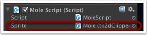

Documentation
Script Reference
Forum
Documentation
Script Reference
Forum
To make life easy for us (again), in the Hierarchy window click on 'Create > tk2d > Empty GameObject' and rename this new object to 'MoleUnit' (although the name isn't important).
In the Inspector window for your newly created GameObject, set the Transform X, Y and Z Position co-ordinates to that of your mole hole.
In the Hierarchy window, drag the mole hole onto the MoleUnit game object you have just created. The mole and dirt game objects will automatically follow.
inhierarchyhighlightand_inspector.png">
Tip: If you are using X and Y values that aren't easy to type in (e.g they have lots of decimal places), another way to achieve this is to:
Drag the empty GameObject onto the mole hole object in the hierarchy window; the X and Y values for the empty GameObject should change.
Select the emtpy GameObject, and in the Inspector window change the X and Y values to 0.
In the hierarchy window, select and drag the emtpy GameObject so it is no longer a child of the mole hole. It should now have the same X and Y values as the mole hole.
Finally, select and drag the mole hole onto the emtpy GameObject. The mole hole will now be a child of the emtpy GameObject and the X and Y values of the hole should now be zero.
In the Project window, click on 'Create > Folder' and name the new folder 'Scripts'. (Again, not necessary but it keeps things tidy)
Select the Scripts folder you have just created then click on 'Create > C# Script', and name the script MoleScript.
Edit the script and put the following code in there:
MoleScript C# version
If you prefer, you can use the Javascript (UnityScript) version of the code. Instead of selecting 'Create > C# Script', select 'Create > Javascript' instead. The Javascript version of the code can be found here. As the td2k source files are written in C#, in order that they work with any Javascript files you create, from the Unity menu bar select '2D Toolkit > SetupForJS'.
Whilst we're at it, create another C# script in the Project window and call it MainGameScript. Then edit the script and put the following code in there: MainGameScript. We will be looking at this script in more detail in the next section, but for now we need it in order to get the MoleScript to compile as it is dependent on it.
You can find the UnityScript version of MainGameScript here
Once you have saved both scripts, select the MoleScript in the Project window then drag it onto the MoleUnit object in the Hierarchy window. The script will now be attached to that object.
inhierarchyandinspectorscripthighlight.png">
As the script contains a public variable named Sprite of type tk2dClippedSprite, it will allow us to associate the Mole sprite with the script. In the Hierarchy window, select the MoleUnit game object then click and drag the Mole object into the Sprite field in the Mole Script.
withmole_attached.png">
For an explanation of what the Mole Script does and how it works, go here
You can download the whack-a-mole package with what we have done so far from here if you want to compare your project with ours.